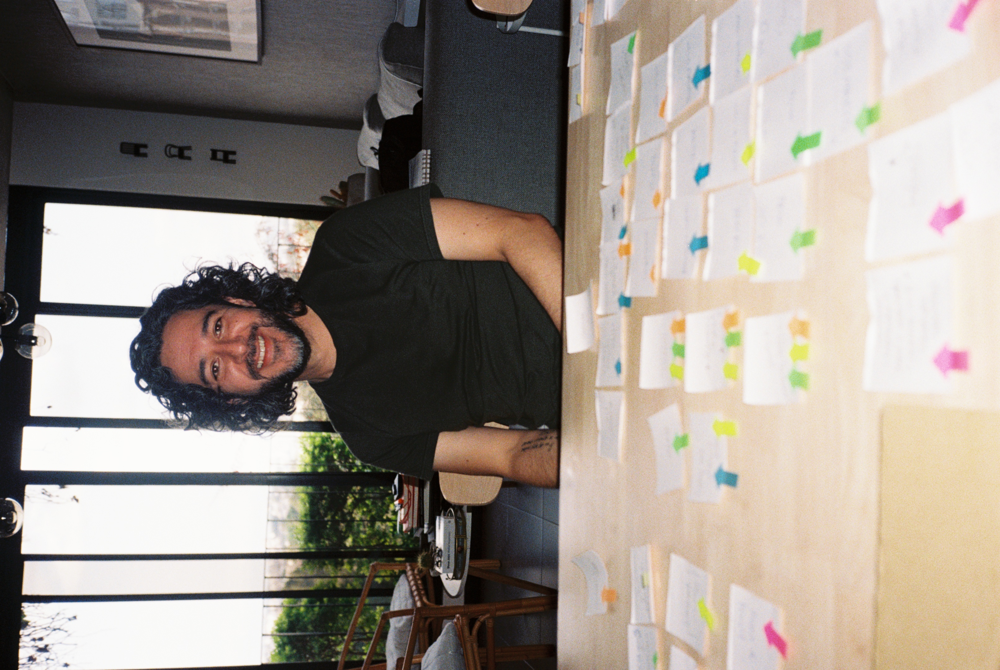
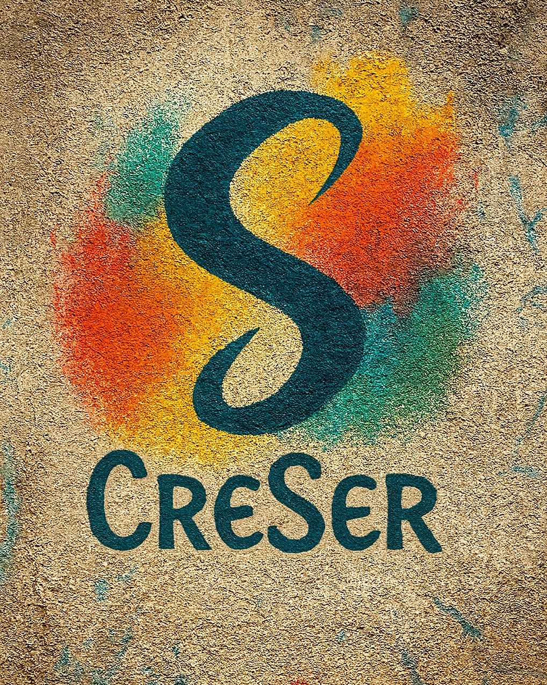

PSIQUIATRÍA
Logos Psyche
Psiquiatría basada en evidencia, escucha profunda y humanidad. Un espacio clínico para pensar, sentir y sostener procesos reales.

Neurociencia · Arte · Humanidad
Ser es el verbo más revolucionario.
PSIQUIATRÍA
Psiquiatría basada en evidencia, escucha profunda y humanidad. Un espacio clínico para pensar, sentir y sostener procesos reales.



PROYECTOS
Historias reales observadas con cuidado. No para explicar lo humano, sino para mirarlo de frente.
CULTURA
Un proyecto grande e inclusivo de psicoeducación y conciencia.

ESCRITURA
Textos para leer con tiempo.